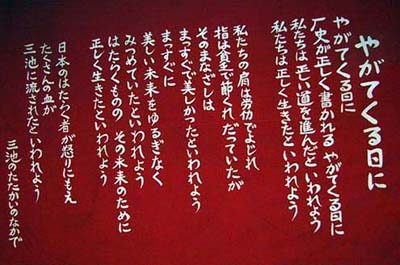

このホームページは、三池闘争を闘ってきた働く仲間たち及びその家族並びにその他支援者からの 御協力で支えられています
三池闘争
ー歴史が正しく書かれるやがてくる日にー

（2002年11月東京日本青年館「1960年・三池」写真展よりＴさん撮影）
父ちゃんたちの闘い
14回炭労大会(昭和29.4.16)
炭婦協緑ヶ丘(昭和29年夏)
退職勧告状返上デモ(昭和34.12.8)
退職勧告状返上総決起集会(昭和34.12.8)
指名解雇状返上デモ(昭和35.1.5)
青空保育園(昭和35年3月)
三池労組三川支部組合員
三池労組三川支部
三池労組四山支部
三川鉱強行就労事件(昭和35.3.28)
灯をともす会(昭和35.3.29)
久保清さん刺殺事件(昭和35.3.29)
故久保清さん追悼デモ(昭和35.4.5)
強制捜査(昭和35.4.7)
炭労第25回臨時大会(35.4.17)
三川鉱通用門事件(35.4.18)
宮浦鉱強行就労事件(昭和35.4.20)
宮川組合長(昭和35.4.25)
デモ〜荒尾市市屋
笹林公園にて
ニュースカーはたかぜ号
主婦会逮捕事件(昭和35.5.3)
港務所事件(昭和35.5.12)
浅沼党書記長来訪(昭和35年5月)
炭婦協第9回評議員会
南新開海戦(昭和35.7.7)
南新開竪坑ろう城
港沖竪坑警戒
ホッパー立入禁止仮処分(昭和35.7.8)
ホッパーの闘い(昭和35年夏)
我が家の写真帖から
三池主婦会三川支部
三池の炭っ子
総評九州拠点大集会(昭和35.7.17)
全気象オルグ(昭和35.7.20〜23)
古河峰池労組企反闘争(昭和35.8.5)
右翼団体の抗議(昭和35年8月)
全日自労中津分会(昭和35.10.2)
三池労組臼井地域分会
全電通オルグ
三池労組三川支部若葉分会
三池労組緑ヶ丘地区楓分会
スト解除就労総決起大会(昭和35.11.1)
大牟田地方裁判所にて(昭和36年4月)
就労一周年団結集会(昭和36.12.3)
新日本窒素水俣労組支援闘争(昭和37年)
石炭政策転換闘争(昭和37.11.20)
団結夕食会
社青同(昭和38年11月)
ＣＯ患者労災打切抗議集会(昭和41年)
ＣＯ患者家族坑底座り込み(昭和42年)
チェコスロバキア炭労委員長(昭和54年)
団結・抵抗・統一(2003年9月)
TOP